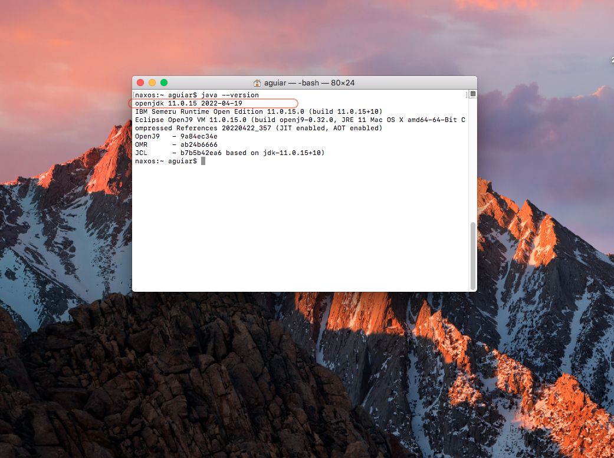
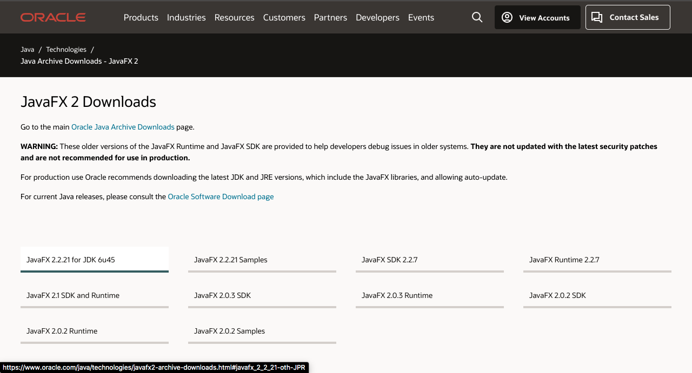

Instalação e conguração do ambiente de desenvolvimento no MacOs
Vamos direto ao assunto, para voçê iniciar o proceso no MAC OS, voçê precisa que esteja instalado na sua máquina:
- JDK Java.
- Eclipse (Não coloco uma obrigatoriedade de versão).
- SDK do JavaFX (Pode baixar no site oficial da Oracle).
Após o download, processo de instalação é bem semelhante aos demais: Clique em Next até
concluir o processo.
Verifique se o OpenJDK está instalado executando o comando 'java --version' no terminal.

Página Eclipse download.

Página JavaFX download.

Com ambos instalados, agora vamos fazer uma aplicação básica de JavaFX.
1 - No eclipse, acesse File > New > Java Project, dê um nome, usei o hello-world,
após isso Finish.
2 - Sobe seu projeto, crie um novo pacote(com o nome main), clicando com o botão direito e New >
Package > Finish.
3 - Em cima do pacote, clique com o botão direito, acesse o menu New > Class com o nome
Main, após isso Finish.
Agora com ambos instalados na sua maquina, voçê precisa configurar a bilbioteca JAVAFX, logo após
isso, já se pode compilar e trabalhar com a ferramenta
1 - No eclipse, acesse Eclipse > Preferencias > Java > Biuld Path > User Libraries, busque o local que instalou o JavaFX, após isso Finish.
2 - clique em Add JARS > Select > Finish.